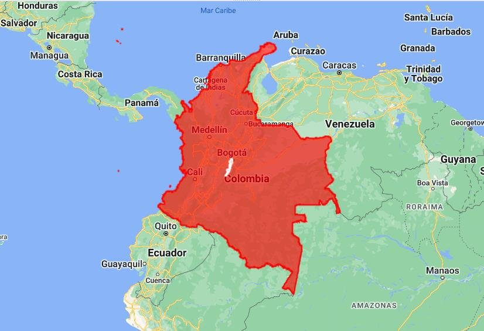

Trabajar con shapefiles en Google Earth Engine
Aprende a filtrar y visualizar correctamente shapefiles en Google Earth Engine con filter y filterMetadata.
Introducción ¶
En este taller aprenderemos a trabajar con shapefiles en Google Earth Engine (GEE). Los shapefiles son conjuntos de entidades geoespaciales que pueden usarse para análisis y visualización en GEE. Exploraremos cómo filtrarlos, visualizarlos en un mapa y realizar análisis espaciales básicos.
Objetivos ¶
- Aprender a filtrar shapefiles utilizando
filteryfilterMetadata. - Visualizar shapefiles en un mapa interactivo.
- Comprender cómo realizar análisis espaciales básicos utilizando las Feature Collections.
Shapefiles en Google Earth Engine ¶
Los shapefiles en GEE son conjuntos de entidades geoespaciales que representan objetos del mundo real, como países, ciudades, cuerpos de agua o parcelas agrícolas. Estas colecciones están compuestas por características geométricas y atributos asociados que describen cada entidad de manera única.
- Entidades geoespaciales: cada elemento de una Feature Collection representa una entidad, como un punto, una línea o un polígono, con una localización geográfica específica.
- Atributos asociados: además de su geometría, cada entidad puede tener atributos numéricos, categóricos o de texto, desde la población de una ciudad hasta el nombre de un país.
- Flexibilidad y escalabilidad: pueden contener desde unas pocas hasta millones de entidades, lo que permite analizar datos geoespaciales a gran escala.
Función filter ¶
La función filter permite filtrar una Feature Collection utilizando una condición específica. Su sintaxis general es:
var nuevaColeccion = featureCollection.filter(ee.Filter.operador(atributo, valor));- featureCollection: la Feature Collection que queremos filtrar.
- atributo: el nombre del atributo sobre el cual aplicaremos la condición.
- operador: el operador que queremos aplicar al atributo.
- valor: el valor con el que queremos comparar el atributo.
Operadores comunes:
| Operador | Selecciona entidades donde el atributo… |
|---|---|
| ee.Filter.eq | es igual a un valor |
| ee.Filter.gt | es mayor que un valor |
| ee.Filter.lt | es menor que un valor |
Función filterMetadata ¶
La función filterMetadata permite filtrar una Feature Collection usando los metadatos asociados a las entidades. Su sintaxis general es:
var nuevaColeccion = featureCollection.filterMetadata(nombreMetadato, operador, valor);- featureCollection: la Feature Collection que queremos filtrar.
- nombreMetadato: el nombre del metadato que usaremos para filtrar.
- operador: el operador que queremos aplicar al metadato.
- valor: el valor con el que queremos comparar el metadato.
Operadores comunes:
| Operador | Selecciona entidades donde el metadato… |
|---|---|
| "equals" | es igual a un valor |
| "greater_than" | es mayor que un valor |
| "less_than" | es menor que un valor |
Recursos ¶
- Shapefiles de países (FAO GAUL nivel 0)
- Shapefiles de ciudades (FAO GAUL nivel 2)
- Más límites administrativos en el catálogo de Earth Engine
Paso 1: Filtrar con filter ¶
Con filter filtramos una colección de países para obtener únicamente Colombia:
// Cargar la Feature Collection de países var Countries = ee.FeatureCollection("FAO/GAUL/2015/level0"); // Filtrar la Feature Collection para obtener solo Colombia var Colombia = Countries.filter(ee.Filter.eq("ADM0_NAME", "Colombia"));
La condición de igualdad se aplica al atributo ADM0_NAME (nombre del país): su valor debe ser igual a "Colombia". El resultado es una nueva colección que contiene solo Colombia.
Paso 2: Filtrar con filterMetadata ¶
Con filterMetadata filtramos una colección de ciudades para obtener únicamente Bogotá:
// Cargar la Feature Collection de ciudades var cities = ee.FeatureCollection("FAO/GAUL_SIMPLIFIED_500m/2015/level2"); // Filtrar la Feature Collection para obtener solo Bogotá var Bogota = cities.filterMetadata("ADM2_NAME", "equals", "Santafe De Bogota D.c.");
La condición se aplica al metadato ADM2_NAME (nombre de la ciudad): su valor debe ser igual a "Santafe De Bogota D.c.". El resultado contiene solo Bogotá.
Paso 3: Visualizar en el mapa ¶
Una vez filtrados, mostramos los shapefiles en el mapa con Map.addLayer, que tiene esta sintaxis general:
Map.addLayer(eeObject, visParams, name, shown);
- eeObject: el objeto de Earth Engine que se va a visualizar: Image, FeatureCollection, Geometry, entre otros.
- visParams: parámetros de visualización como el color, la opacidad o la escala.
- name: el nombre que aparece en el panel de capas.
- shown:
trueofalse, indica si la capa se ve al cargar el mapa.
Aplicado a nuestras capas:
// Centrar el mapa en Colombia Map.centerObject(Colombia, 5); // Añadir los shapefiles al mapa Map.addLayer(Colombia, {color: "red"}, "Colombia", true); // Añadir Bogotá al mapa Map.addLayer(Bogota, {color: "white"}, "Bogotá", true);

Código completo del video ¶
Este es el script completo que se usa en el video. Cópialo, pégalo en el Code Editor y presiona Run.
// see this web link for countries --> https://developers.google.com/earth-engine/datasets/catalog/FAO_GAUL_2015_level0 // see this web link for cities --> https://developers.google.com/earth-engine/datasets/catalog/FAO_GAUL_2015_level2 // More shapefiles: https://developers.google.com/earth-engine/datasets/tags/borders /////////////////////////////////////////////////////////////////////////////////// // PROCESS /////////////////////////////////////////////////////////////////////////////////// // 1 --> Filter Feature collections with filter // 1.1 --> Visualization of feauture collections on map // 2 --> Filter Feature collections with filterMetadata // 2.1 --> Visualization of feauture collections on map //throw("stop"); /////////////////////////////////////////////////////////////////////////////////// // 1 --> Filter Feature collections with filter /////////////////////////////////////////////////////////////////////////////////// //// Load countries feature collections var Countries = ee.FeatureCollection("FAO/GAUL/2015/level0"); print("paises: ", Countries.limit(10)); var Colombia=Countries.filter(ee.Filter.eq("ADM0_NAME","Colombia")); /////////////////////////////////////////////////////////////////////////////////// // 2 --> Visualization of feature collections on map /////////////////////////////////////////////////////////////////////////////////// Map.centerObject(Colombia,5); Map.addLayer(Colombia,{color:"red"},"Colombia", true); /////////////////////////////////////////////////////////////////////////////////// // 1 --> Filter Feature collections with filterMetadata /////////////////////////////////////////////////////////////////////////////////// //// Load cities feature collections var cities =ee.FeatureCollection("FAO/GAUL_SIMPLIFIED_500m/2015/level2"); print("Ciudades: ", cities.limit(10)); var Bogota=cities.filterMetadata("ADM2_NAME", "equals", "Santafe De Bogota D.c."); /////////////////////////////////////////////////////////////////////////////////// // 2 --> Visualization of feature collections on map /////////////////////////////////////////////////////////////////////////////////// Map.addLayer(Bogota,{color:"white"},"Bogotá", true);
Conclusiones ¶
En este taller aprendimos a trabajar con shapefiles en Google Earth Engine: filtrarlos, visualizarlos en un mapa interactivo y realizar análisis básicos. Estas habilidades son fundamentales para cualquier proyecto de análisis espacial en GEE.